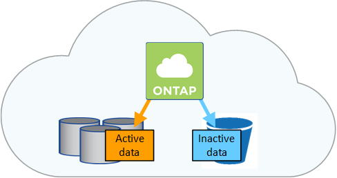

版本資訊
版本資訊
資料分層總覽
 建議變更
建議變更
將非作用中資料自動分層至低成本的物件儲存設備、藉此降低儲存成本。作用中資料仍保留在高效能 SSD 或 HDD 中、而非作用中資料則分層至低成本物件儲存設備。如此一來、您就能回收主儲存設備上的空間、並縮減二線儲存設備。

資料分層是 FabricPool 以不同步技術為後盾。

|
您不需要安裝功能授權、就能啟用資料分層 FabricPool （例如、）。 |
AWS 中的資料分層
當您在 AWS 中啟用資料分層功能時、 Cloud Volumes ONTAP VMware 會使用 EBS 做為熱資料的效能層、而 AWS S3 則是非作用中資料的容量層。
- 效能層級
-
效能層可以是通用SSD（GP3或gp2）或已配置的IOPS SSD（IO1）。
使用處理量最佳化的HDD（ST1）時、不建議將資料分層至物件儲存設備。
- 容量層
-
這個系統會將非作用中的資料分層至單一S3儲存區。Cloud Volumes ONTAP
BlueXP會針對每個工作環境建立單一S3儲存區、並將其命名為「網路資源池」、「叢集唯一識別碼」。並不會針對每個 Volume 建立不同的 S3 儲存區。
當BlueXP建立S3儲存區時、會使用下列預設設定：
-
儲存等級：標準
-
預設加密：停用
-
封鎖公開存取：封鎖所有公開存取
-
物件擁有權：啟用ACL
-
儲存區版本設定：已停用
-
物件鎖定：已停用
-
- 儲存類別
-
AWS 中階層式資料的預設儲存類別為 Standard 。Standard 適用於儲存在多個可用度區域中的常用資料。
如果您不打算存取非作用中資料、可以將儲存類別變更為下列其中一項、藉此降低儲存成本：Intelligent Tiering、_One Zone In頻率 存取、_Standard-in頻繁 存取_或_S3 Glacier即時擷取。當您變更儲存類別時、非作用中的資料會從 Standard 儲存類別開始、並轉換至您選取的儲存類別（如果 30 天後仍未存取資料）。
如果您確實存取資料、存取成本就會較高、因此在變更儲存類別之前、請先將此納入考量。 "深入瞭解 Amazon S3 儲存類別"。
您可以在建立工作環境時選取儲存類別、之後隨時變更。如需變更儲存類別的詳細資訊、請參閱 "將非作用中資料分層至低成本物件儲存設備"。
資料分層的儲存類別是全系統範圍、並非每個磁碟區。
Azure 中的資料分層
當您在 Azure 中啟用資料分層功能時、 Cloud Volumes ONTAP VMware 會使用 Azure 託管磁碟做為熱資料的效能層、而 Azure Blob 儲存設備則是非作用中資料的容量層。
- 效能層級
-
效能層可以是 SSD 或 HDD 。
- 容量層
-
將非作用中資料分層至單一Blob容器。Cloud Volumes ONTAP
BlueXP會建立一個新的儲存帳戶、並為每Cloud Volumes ONTAP 個運作環境建立一個容器。儲存帳戶名稱為隨機。並不會針對每個 Volume 建立不同的容器。
BlueXP會建立具有下列設定的儲存帳戶：
-
存取層：Hot
-
效能：標準
-
備援：本機備援儲存設備（LRS）
-
帳戶：StorageV2（通用v2）
-
需要安全傳輸以執行REST API作業：已啟用
-
儲存帳戶金鑰存取：已啟用
-
最低TLS版本：1.2版
-
基礎架構加密：已停用
-
- 儲存存取層
-
Azure 中階層式資料的預設儲存存取層為 hot 層。熱層是容量層中經常存取資料的理想選擇。
如果您不打算存取容量層中的非作用中資料、可以改用_cle__儲存層來降低儲存成本。當您將儲存層變更為冷卻時、非作用中的容量層資料會直接移至冷卻儲存層。
如果您確實存取資料、存取成本就會較高、因此在變更儲存層之前、請先將此納入考量。 "深入瞭解 Azure Blob 儲存設備存取層"。
您可以在建立工作環境時選取儲存層、之後隨時變更。如需變更儲存層的詳細資訊、請參閱 "將非作用中資料分層至低成本物件儲存設備"。
資料分層的儲存存取層是全系統的、並非每個磁碟區。
Google Cloud中的資料分層
當您在Google Cloud中啟用資料分層時、Cloud Volumes ONTAP VMware會使用持續性磁碟做為熱資料的效能層、並使用Google Cloud Storage儲存庫做為非作用中資料的容量層。
- 效能層級
-
效能層可以是SSD持續磁碟、平衡持續磁碟或標準持續磁碟。
- 容量層
-
這個系統會將非作用中的資料分層至單一Google Cloud Storage儲存庫。Cloud Volumes ONTAP
BlueXP會為每個工作環境建立一個儲存區、並將其命名為「網路資源池」、「叢集唯一識別碼」。並不會針對每個 Volume 建立不同的儲存區。
當BlueXP建立儲存區時、會使用下列預設設定：
-
位置類型：地區
-
儲存等級：標準
-
公共存取：受物件ACL限制
-
存取控制：精細的
-
保護：無
-
資料加密：Google管理的金鑰
-
- 儲存類別
-
階層式資料的預設儲存類別為 Standard Storage 類別。如果資料不常存取、您可以改用 Nearline Storage 或 Coldline Storage 來降低儲存成本。當您變更儲存類別時、非作用中資料會直接移至您選取的類別。
如果您確實存取資料、存取成本就會較高、因此在變更儲存類別之前、請先將此納入考量。 "深入瞭解 Google Cloud Storage 的儲存課程"。
您可以在建立工作環境時選取儲存層、之後隨時變更。如需變更儲存類別的詳細資訊、請參閱 "將非作用中資料分層至低成本物件儲存設備"。
資料分層的儲存類別是全系統範圍、並非每個磁碟區。
資料分層和容量限制
如果您啟用資料分層、系統的容量限制會維持不變。此限制分佈於效能層和容量層。
Volume 分層原則
若要啟用資料分層、您必須在建立、修改或複寫磁碟區時、選取磁碟區分層原則。您可以為每個 Volume 選取不同的原則。
有些分層原則具有相關的最低冷卻週期、可設定磁碟區中的使用者資料必須保持非作用中狀態的時間、以便將資料視為「冷」並移至容量層。當資料寫入Aggregate時、就會開始冷卻期間。

|
您可以將最小冷卻週期和預設Aggregate臨界值變更為50%（以下詳細資訊）。 "瞭解如何變更冷卻週期" 和 "瞭解如何變更臨界值"。 |
在建立或修改磁碟區時、您可以使用BlueXP從下列磁碟區分層原則中進行選擇：
- 僅適用於 Snapshot
-
當 Aggregate 達到 50% 容量後、 Cloud Volumes ONTAP 將不會與作用中檔案系統相關聯的 Snapshot 複本的 Cold 使用者資料分層至容量層。冷卻期約為 2 天。
如果讀取、容量層上的冷資料區塊會變熱、並移至效能層。
- 全部
-
所有資料（不含中繼資料）會立即標示為冷資料、並儘快分層至物件儲存設備。無需等待 48 小時、磁碟區中的新區塊就會變冷。請注意、在設定 All 原則之前、位於磁碟區中的區塊需要 48 小時才能變冷。
如果讀取、雲端層上的 Cold 資料區塊會保持冷卻狀態、不會寫入效能層。本政策從 ONTAP 推出時起即為供應。
- 自動
-
當 Aggregate 容量達到 50% 後、 Cloud Volumes ONTAP 將 Volume 中的 Cold 資料區塊分層至容量層。Cold 資料不僅包括 Snapshot 複本、也包括來自作用中檔案系統的冷使用者資料。冷卻期約 31 天。
支援此原則、從 Cloud Volumes ONTAP 支援的功能為 2 。 9.4 。
如果以隨機讀取方式讀取、容量層中的冷資料區塊就會變熱、並移至效能層。如果以連續讀取方式讀取（例如與索引和防毒掃描相關的讀取）、則冷資料區塊會保持冷卻狀態、而不會移至效能層級。
- 無
-
將磁碟區的資料保留在效能層中、避免移至容量層。
複寫磁碟區時、您可以選擇是否要將資料分層至物件儲存設備。如果您這麼做、BlueXP會將*備份*原則套用至資料保護磁碟區。從 Sich9.6 開始 Cloud Volumes ONTAP 、 * All （全部）的分層原則將取代備份原則。
關閉 Cloud Volumes ONTAP 此功能會影響冷卻期間
資料區塊是透過冷卻掃描來冷卻。在此過程中、尚未使用的區塊溫度會移至下一個較低的值（冷卻）。預設的冷卻時間取決於磁碟區分層原則：
-
自動： 31 天
-
僅 Snapshot ： 2 天
冷卻掃描必須執行、才能正常運作。 Cloud Volumes ONTAP如果關閉了這個功能、冷卻也會停止。 Cloud Volumes ONTAP因此、您可以體驗更長的冷卻時間。
|
|
關閉動作時、會保留每個區塊的溫度、直到您重新啟動系統為止。Cloud Volumes ONTAP例如、當您關閉系統時、如果區塊的溫度為5、則當您重新開啟系統時、溫度仍為5。 |
設定資料分層
如需相關指示及支援組態清單、請參閱 "將非作用中資料分層至低成本物件儲存設備"。